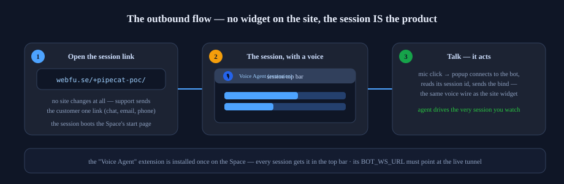
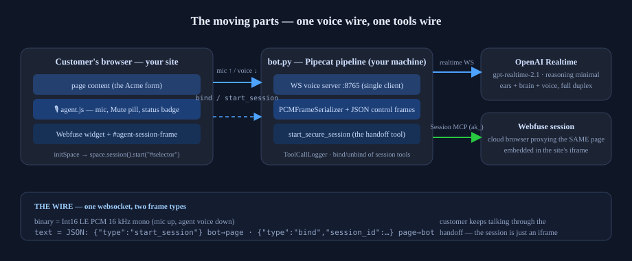
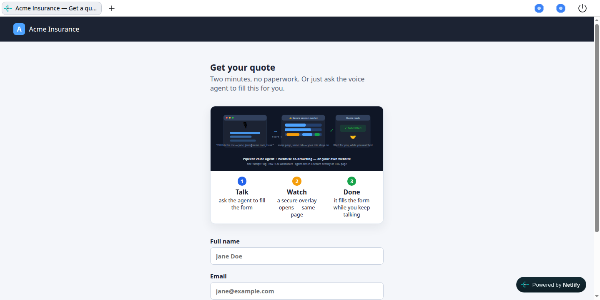
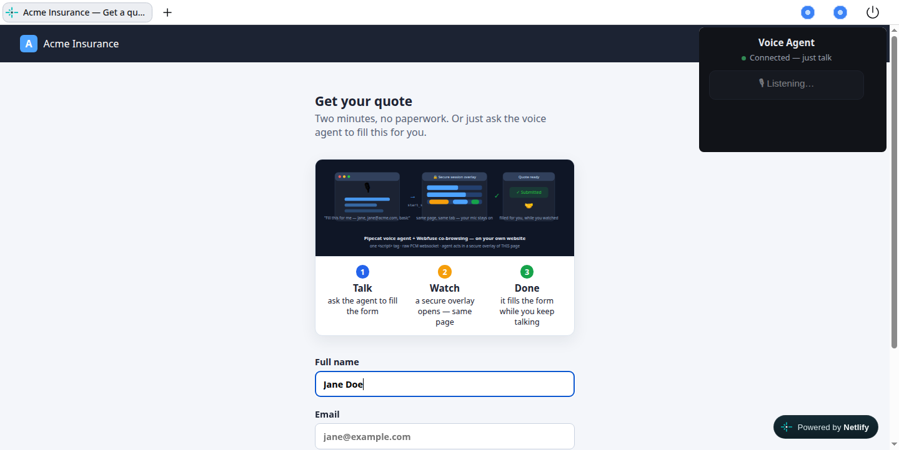
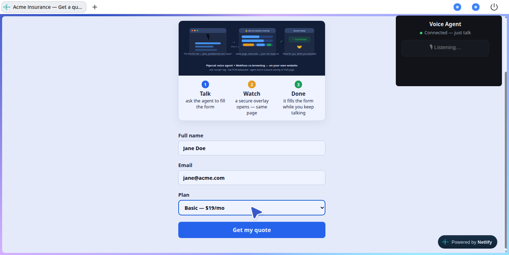
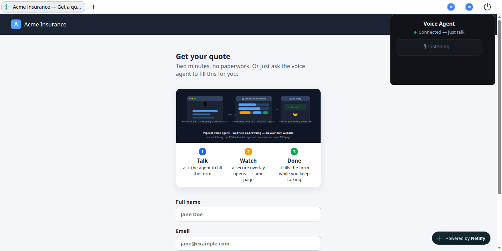

Webfuse × Pipecat — a voice agent with eyes and hands
This demo shows how powerful Webfuse is for AI agents: a Webfuse Space with the Pipecat voice-agent extension turns a plain voice bot into an agent that can see the page and act on it — the customer just talks.

What you get
A Webfuse Space (pipecat-poc) with the Voice Agent extension
installed. Open a session link — the session opens with the demo site
(Acme Insurance) — and a 🎙 mic button appears in the session's top
bar. Click it, allow the microphone, and talk:
"Fill the quote form for me — Jane, jane@acme.com, basic plan."
The Pipecat agent listens, sees the page through the session, and acts on it through the session — it reads the form, types the name and email, picks the plan, clicks submit — narrating each step out loud while it works. Your voice connection and the agent's actions run at the same time, in the same session you are watching.
That is the whole point: Webfuse hands the agent its eyes (page snapshots) and its hands (click / type / select) — the Pipecat agent supplies the ears and the voice.
How it works

Customer Webfuse Space Pipecat bot
(browser) (cloud browser) (bot.py, local or hosted)
───────── ───────────── ─────────────────────────
🎙 mic ────────────► PCM over websocket ────► OpenAI Realtime
(16 kHz audio, both ways)
session shows the site LLM decides what to do
│
eyes + hands ◄─────────────┘
Webfuse Session MCP
(see_domSnapshot, act_type, act_click …)
Three pieces, one wire each:
| Piece | What it is |
|---|---|
| The session | A Webfuse cloud browser (the Space's start page) — what the customer sees and what the agent drives |
| The extension | The 🎙 button in the session top bar. Its popup opens a websocket to the bot and reports the session id — so the agent's tools point at this session |
| The bot | A Pipecat pipeline: OpenAI Realtime (gpt-realtime-2.1) for ears/brain/voice, plus the 14 Webfuse session tools for eyes and hands |
The voice wire is deliberately dumb: raw PCM audio (16 kHz, mono)
both ways, plus tiny JSON control frames — the popup sends
{"type":"bind","session_id":…} so the bot knows which session to
drive. No SDK on the page, no WebRTC, nothing to negotiate.
Setup
1. Run the bot
python3 -m venv .venv
.venv/bin/pip install "pipecat-ai[mcp]==1.15.0" aiohttp python-dotenv
# .env: OPENAI_API_KEY, WEBFUSE_API_KEY (ak_…), WEBFUSE_SPACE_ID
setsid nohup .venv/bin/python bot.py > bot.log 2>&1 < /dev/null &
The voice websocket listens on localhost:8765.
2. Expose it over HTTPS (demo shortcut: ngrok)
The session runs in Webfuse's cloud, so the bot needs a public websocket URL. For this demo we use ngrok — but that's only a POC convenience (see Notes): in production you'd host the bot with its own HTTPS endpoint and skip this step:
setsid nohup ngrok http 8765 --log stdout > ngrok.log 2>&1 < /dev/null &
curl -s http://127.0.0.1:4040/api/tunnels # copy the wss:// URL
3. Configure the extension
The extension's BOT_WS_URL env must be the bot's public URL. It lives
in the extension repo (extension/manifest.json), installed on the
Space from github.com/vipin-surfly/webfuse-pipecat-extension:
# when the tunnel URL changes: edit manifest.json, then
git push # extension repo
# then in Webfuse Studio → Space → Extensions → update/reinstall it
Extensions load on the next session start — start a fresh session after changing it.
4. Demo
- Open https://webfu.se/+pipecat-poc/ — the session starts with the Acme demo site.
- Click 🎙 Voice Agent in the top bar → allow the microphone.
- Talk: "Fill the quote form for me — Jane, jane@acme.com, basic plan." Watch it read, fill, and submit — while it narrates.
Anything you say next, it can do on the page: "change the plan to premium", "read me the confirmation", "start over".
The demo, frame by frame
Real screenshots from a live session — what the customer sees at each step:
 |
1 — The session. Open the link; the site loads inside the session, with the 🎙 Voice Agent button in the top bar. |
| 2 — The popup. Click 🎡 → the extension's popup: “Allow microphone & connect”. One click. | |
| 3 — Connected. The popup shows a live green dot: “Connected — just talk”. The mic is now the agent's ears. | |
 |
4 — It listens, it types. Say "Fill the quote form for me — Jane…" and the agent types into the real form. |
 |
5 — Eyes and hands. Name, email, plan — the agent read the page and filled every field. |
 |
6 — Done. It clicks submit and confirms out loud — end to end, hands-free. |
Also: the same agent on your own website
The same bot also powers a site-embedded variant — a few lines of
script in your own page (demo-site/): the customer talks to the agent
from the site itself, and when it needs to act, a Webfuse session
embeds as an overlay of that same page (session.start("#frame")),
never navigating away. Same wire, same tools — the demo site at
https://webfuse-pipecat.netlify.app runs this mode. See the code in
demo-site/agent.js if you want that variant.
Troubleshooting
| Symptom | Fix |
|---|---|
| 🎙 clicked, silence | Bot down: pgrep -f "python bot[.]py", restart per Setup 1 |
| Connect error in the popup | Tunnel down or URL changed: restart ngrok, update BOT_WS_URL in the extension, reinstall, start a new session |
| Agent hears but "can't see the page" | Session not bound — reload the popup (click 🎙 again); check bot.log for Bound to inbound session |
| Agent goes quiet after ~60 min | OpenAI Realtime session limit — restart the bot |
| Slow replies | Reasoning(effort="minimal") is already set; check tunnel latency, consider a paid tunnel or hosting the bot |
| Two 🎙 buttons in the top bar | Stale duplicate extension on the Space — delete the old one in Studio → Extensions |
Notes
- ngrok is demo-only. The free tunnel is just the quickest way to
get a public
wss://URL on a laptop for this POC — its URL rotates on every restart (the one manual step here) and it adds latency. In a real deployment the bot runs hosted — any server or container with an HTTPS certificate (your own infra, a VPS, a cloud run service) — and the extension'sBOT_WS_URLsimply points at that stable URL. Nothing else in the demo changes: same Pipecat pipeline, same extension, same Space. - The bot serves a local test page on
:8766(client/index.html) for voice-only debugging without a session. - The 14 session tools come from Webfuse's Session MCP
(
session-mcp.webfu.se) — the bot injects the bound session id into every call, so the agent never deals with ids itself.